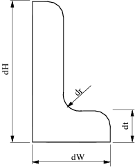

Making submeshes from regions
Contents
Geometric model with interface
LShapeIfaceGeom class provides geometric model with internal boundary (called interface). The user can set the plcement of the interface with some restricted way by varying parameters fA and fB in the range (0, 1).
clear variables;
Create Mesher object
When Mesher object is created it takes care of initializing interface to GMSH mesh generator
mesher = mp.Mesher();
Create object describing geometric model
geom = mp.geoms.LShapeIfaceGeom('my_domain'); geom.params.dW = 3; geom.params.dt = 1.2; % Relative placement of interface endpoints. geom.params.fA = 0.5; geom.params.fB = 0.2; % The mesh in the upper subdomain will consist of quad elements. geom.params.quads = [0, 1];

Generate mesh
mesh = mesher.generate(geom, struct('lc', 0.8));
Visualize mesh
The simplest way to visualize mesh is to use Viewer class.
viewer = mp.Viewer(); viewer.show(mesh);
Create submes of interface
The submesh is created by specifying region names of the source mesh
regionNames = {'i_interface'};
subMesh = mesh.submeshFromRegions(regionNames);
dx = geom.params.dt * 1.5;
dy = 0.5*dx;
mp.translateMesh(subMesh, [dx, dy]);
Illustrate link between nodes of the submesh and its parent mesh.
hold on for i=1:3 pb = subMesh.nodes(i,:); pe = mesh.nodes(subMesh.parentNodesMap(i),:); mp_plot_spline_arc(gca, pb, pe, -0.2, 8, 4); end viewer.showCellEdges = true; viewer.show(subMesh);
Create submes of a subdomain
Illustrate link between elements of the submesh and it sparent mesh
viewer.stackFigure();
regionNames = {'d_subTop'};
subMesh = mesh.submeshFromRegions(regionNames);
mp.translateMesh(subMesh, [dx, 0]);
viewer.show(mesh);
viewer.show(subMesh);
hold on
for i=[1, 5, 7]
pb = subMesh.elemsCenters(i);
pe = mesh.elemsCenters(subMesh.parentElemsMap(i));
handles = mp_plot_spline_arc(gca, pb.Data, pe.Data, -0.3, 8, 4);
set(handles.lines, 'Color', 'red');
set(handles.arrows, 'Color', 'red');
end
Internal management of demo
mp_manage_demos('report', 'Mesh_parent_child_submesh', true);